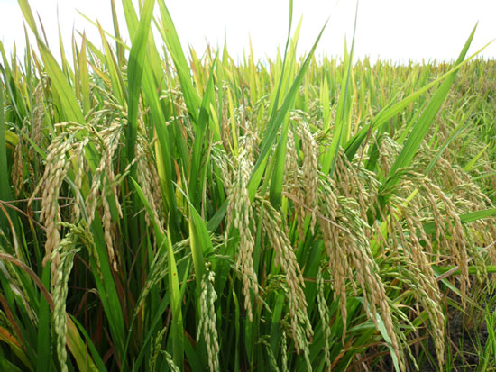

Viện lúa đồng bằng sông Cửu Long vừa lai tạo thành công hai giống lúa chất lượng cao , đạt chuẩn xuất khẩu là OM 7347 và OM 6600.
Giống lúa OM 7347 là giống lúa thuần vừa được Bộ Nông nghiệp và Phát triển nông thôn công nhận là giống quốc gia, được trồng khảo nghiệm so sánh năng suất từ vụ đông - xuân 2008-2009, đến nay được trên 20.000 ha. Mạng lưới khảo nghiệm được thực hiện hàng vụ trên diện rộng tại viện lúa, các Trung tâm Khuyến nông, Trung tâm Giống của 13 tỉnh đồng bằng sông Cửu Long, 5 tỉnh miền Đông và 7 tỉnh miền Trung.
Kết quả cho thấy, giống OM 7347 có thời gian sinh trưởng 95-105 ngày, chiều cao cây 100-110cm, số bông/m2 khá cao (350-380 bông), tỉ lệ hạt lép/bông thấp (9,9%), nặng hạt (trọng lượng 1.000 hạt 26 -27g), hạt gạo đẹp, thon dài (6,92mm), hàm lượng amylose thấp (16,8%), cơm dẻo, thơm ngon, hàm lượng protein rất cao (8,9%). Ngoài các đặc tính tốt về phẩm chất, giống còn sở hữu luôn đặc tính năng suất cao (6-8 tấn/ha/vụ) và có khả năng chống chịu sâu bệnh tốt như rầy nâu (cấp 3), đạo ôn (cấp 3-5) và bạc lá (cấp 3), bệnh vàng lùn và khô hạn. Đây là giống lúa rất tốt để đưa ra diện rộng và bổ sung vào cơ cấu giống chủ lực cho các tỉnh thành như: Cần Thơ, Hậu Giang, Sóc Trăng, An Giang, Vĩnh Long, Trà Vinh. Giống lúa OM6600 cũng là giống lúa thuần, đã được Bộ Nông nghiệp và Phát triển nông thôn công nhận là giống quốc gia. Giống OM6600 được trồng khảo nghiệm tại đồng bằng sông Cửu Long từ vụ đông-xuân 2005-2006 đến nay được 20.000 ha. Giống này có rất nhiều ưu điểm như đẻ nhánh rất tốt, dạng hình đẹp, bông chùm, không lép cậy, năng suất cao, gạo dẻo, thơm, chống chịu rầy nâu, bệnh vàng lùn, lùn xoắn lá, năng suất từ 6-8 tấn/ha, có khả năng phát triển tốt ở hầu hết các tỉnh Đồng bằng sông Cửu Long. Đây là giống rất tốt để đưa ra diện rộng và bổ sung vào cơ cấu giống cho các tỉnh khu vực này